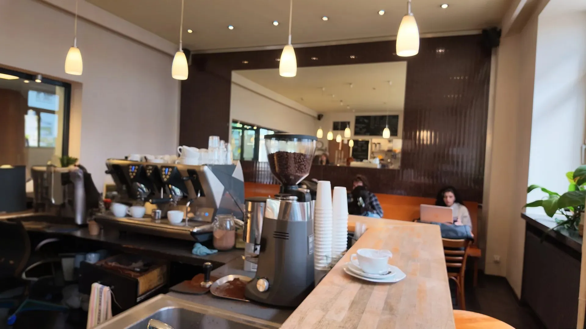
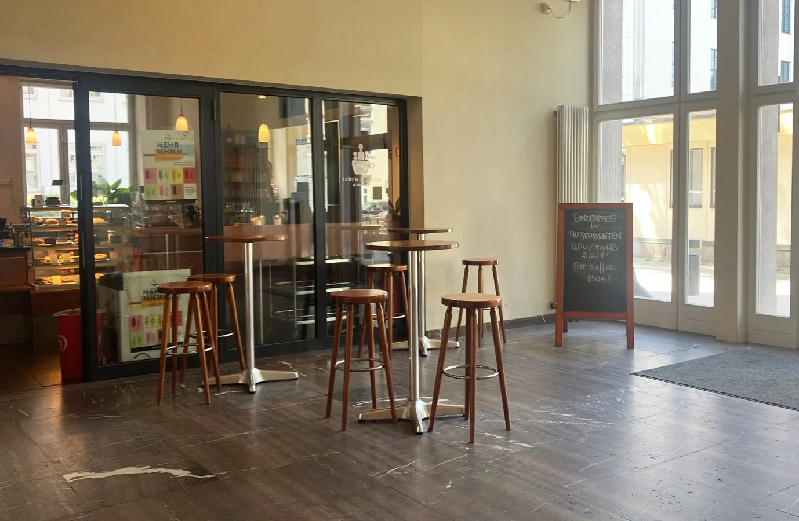
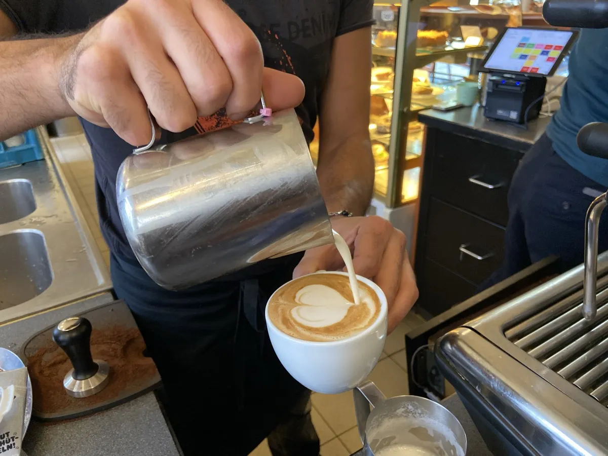
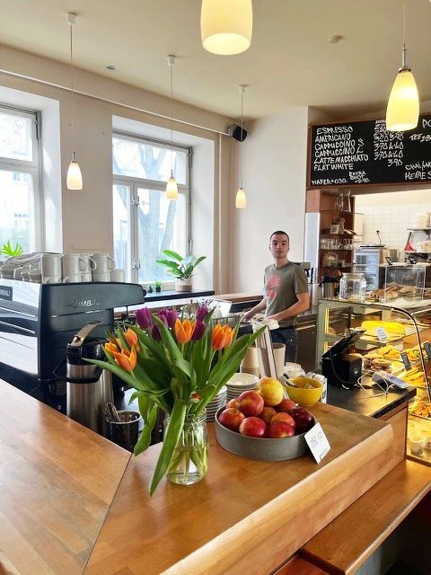
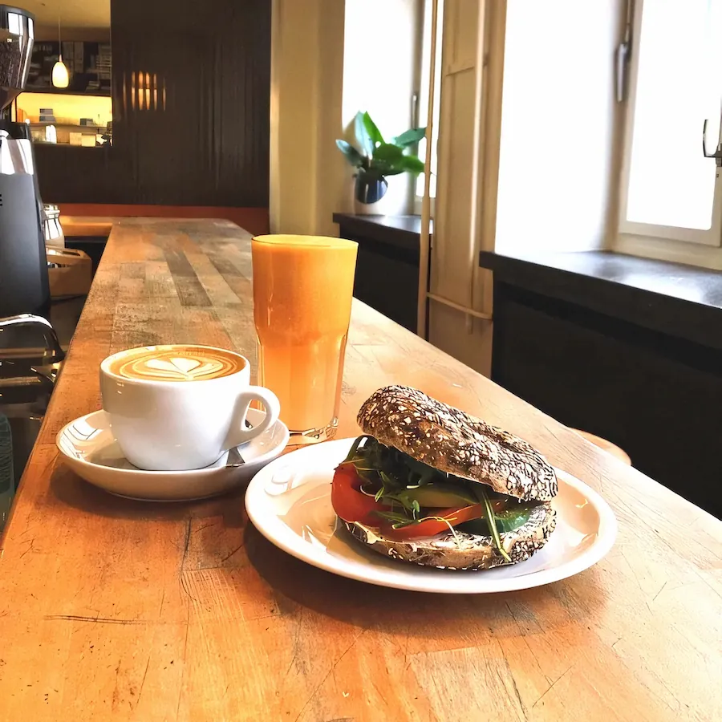
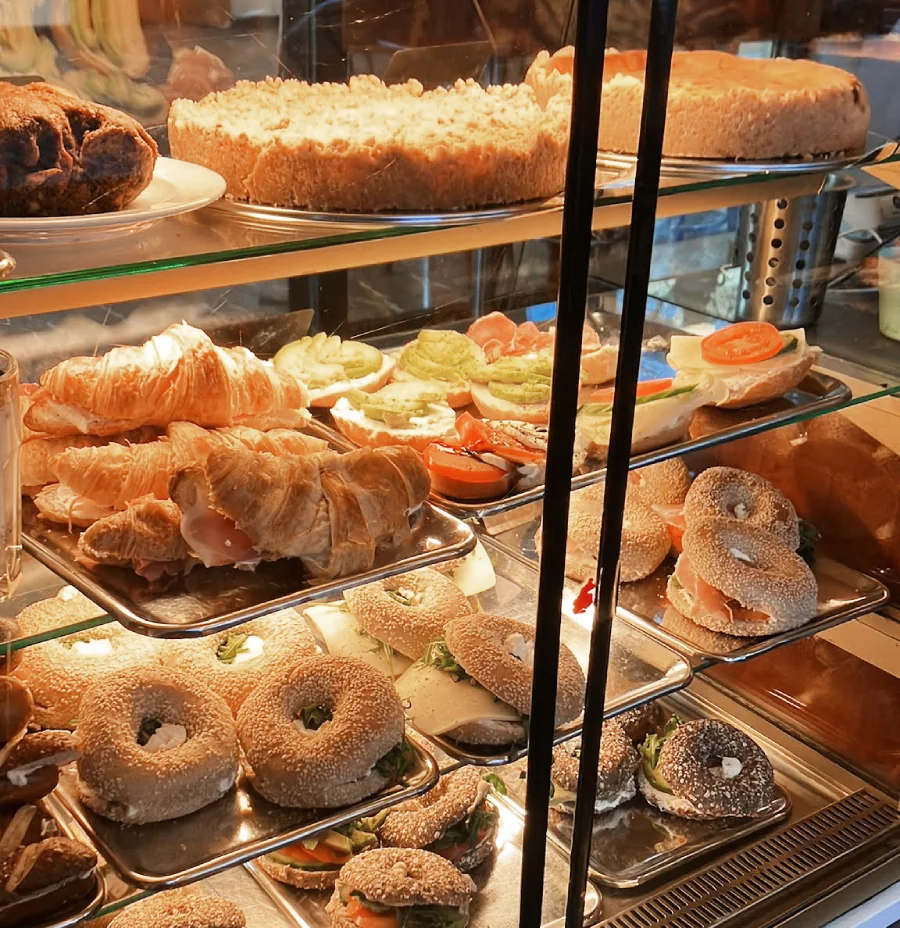
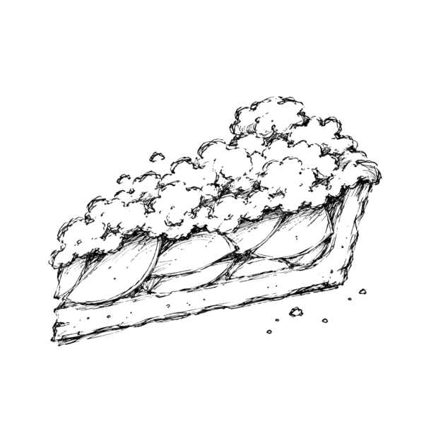
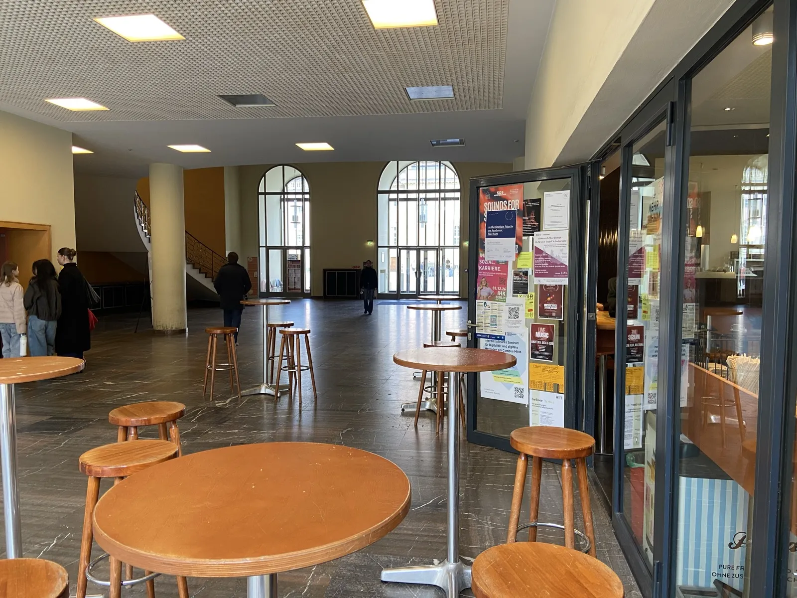
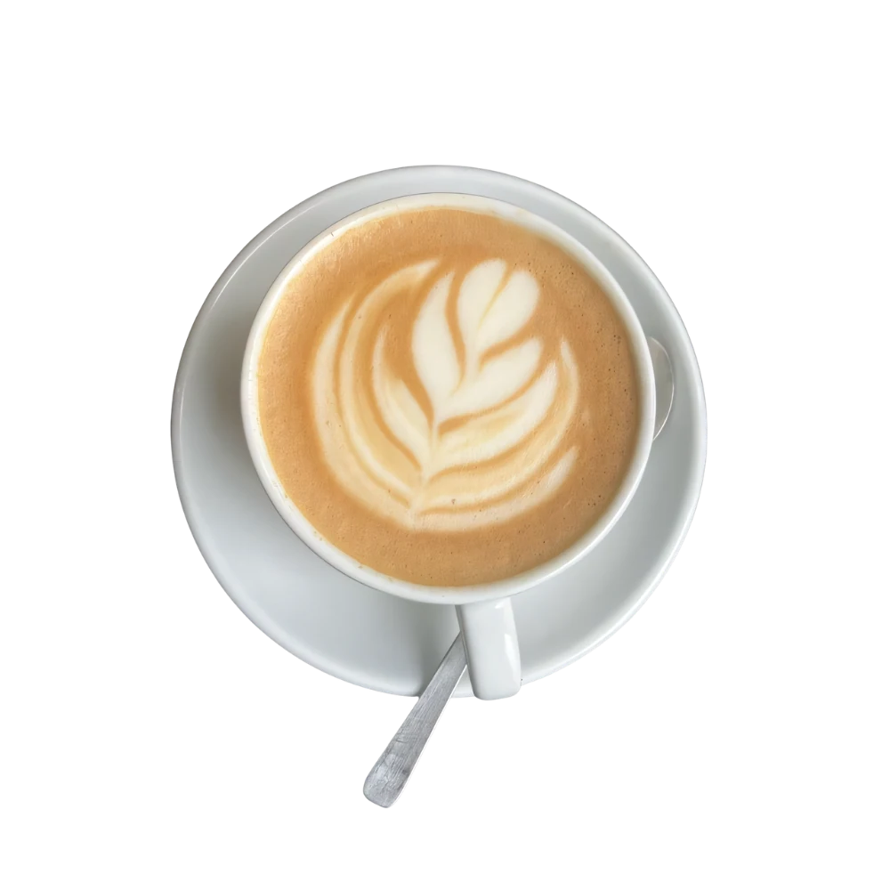

Ein Pott Kaffee. 1,50 €.
Guter, alter Filterkaffee für zwischendurch – für Studierende der HU.

Das Lorch & Söhne Kommode

Seit Januar 2024 gibt es Lorch & Söhne auch in der Kommode (der Juristischen Fakultät der Humboldt-Universität) am Bebelplatz.
Für einen richtig guten Cappuccino zwischendurch oder einen belegten Bagel, ein Stück frisch gebackenen Kuchen. Oder, wenn du an der HU studierst, für einen Pott Kaffee für 1,50.
Zum Angebot




Lorch & Söhne · Kommode
Espresso, Americano, Cappuccino, Flat White, Latte Macchiato und andere Kaffeespezialitäten. Auch hier verwenden wir den Passenger Blend aus der Berliner Rösterei PASSENGER.
Guter, alter Filterkaffee für zwischendurch – für Studierende der HU.

Ob Lachs, Serrano, Italiano oder vegetarisch mit Hummus – unsere Bagels kommen von Salomon Bagels aus Berlin.

Banana Bread, Carrot Cake oder Käsekuchen? In unserer Vitrine findest du selbst gebackenen Kuchen und immer wieder etwas Neues.

Lust auf etwas Warmes? Dann gibt’s frisch gekochte Suppen – mal Daal, mal Kartoffel- oder Hühnersuppe.

Alte Bibliothek · Bebelplatz
Die Alte Bibliothek am Bebelplatz wird wegen ihrer besonderen Form auch „Kommode“ genannt. Das Gebäude aus dem 18. Jahrhundert beherbergt heute die Juristische Fakultät der Humboldt-Universität und die juristische Zweigbibliothek.
Mitten im Universitätsalltag findet ihr hier seit 2024 Lorch & Söhne – für guten Kaffee, lecker belegte Bagels und eine kleine Pause zwischendurch.
Wer in der juristischen Bibliothek lernen möchte, muss Jacken und größere Taschen im Garderobenschrank lassen.
Falls ihr kein eigenes Vorhängeschloss dabei habt, könnt ihr euch einfach eines bei uns im Café ausleihen.
Schloss bei uns abholen, Sachen einschließen und nach dem Bibliotheksbesuch am selben Tag bis 18 Uhr wieder zurückbringen.

Lorch & Söhne · Kommode
Mit der U5 oder U6 bis Unter den Linden. Von dort ist die Kommode am Bebelplatz gut zu Fuß erreichbar.
Route planen